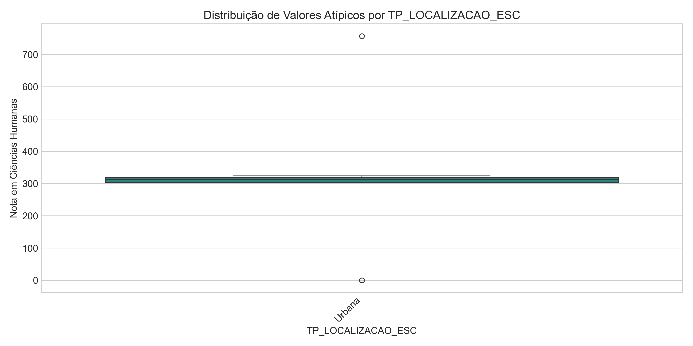
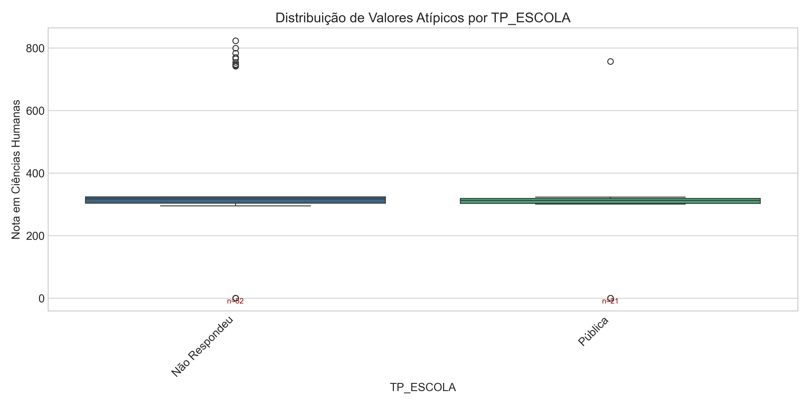
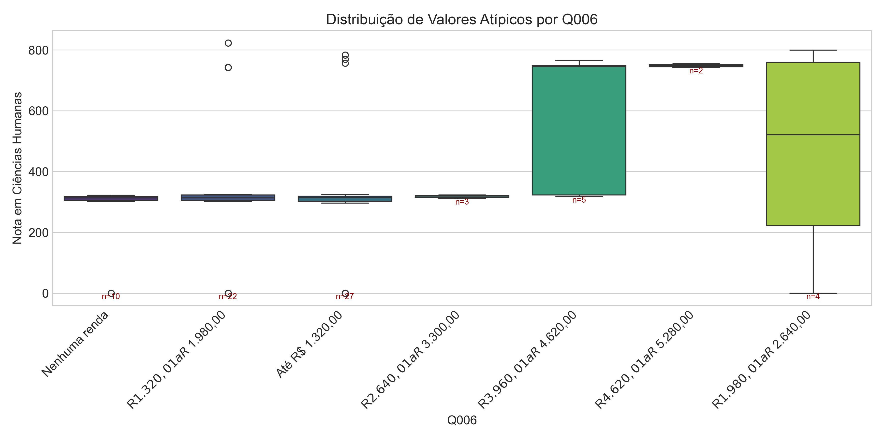
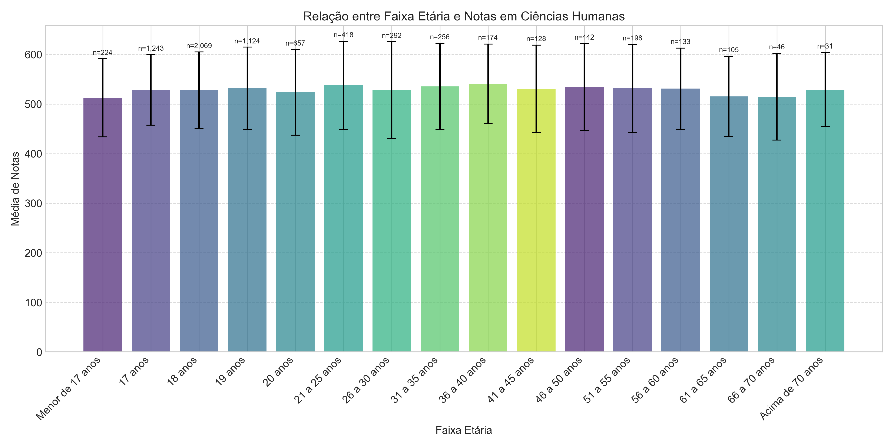
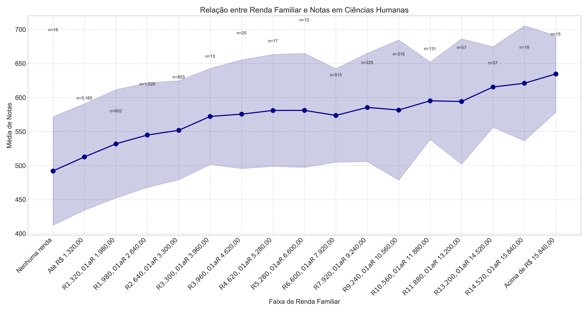
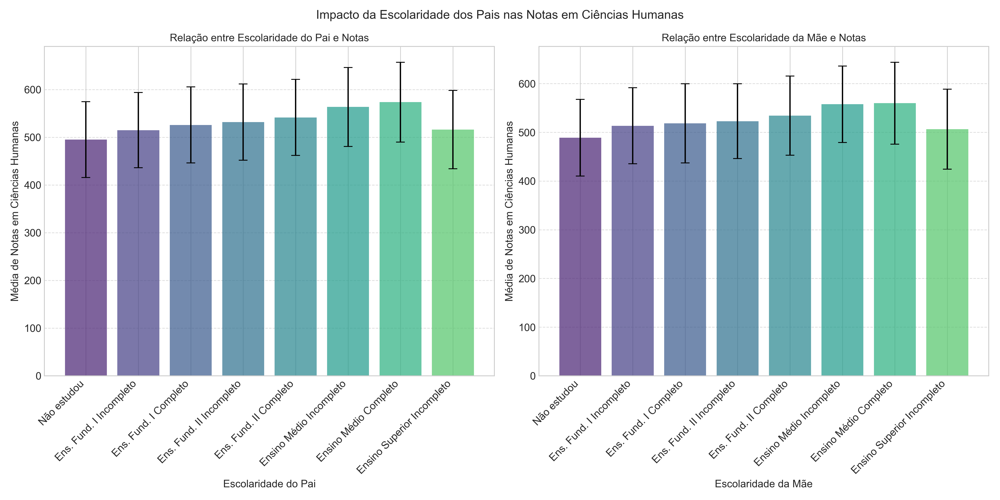

Data de geração: 30/03/2025 22:45:25
Total de registros: 10,000
Registros com notas em CH: 7,562 (75.62%)
Média geral em CH: 529.10
Nota mínima em CH: 0.00
Nota máxima em CH: 823.00
Foram identificados valores atípicos nas notas de Ciências Humanas, que foram analisados em relação à localização da escola, tipo de escola e renda familiar.
  Foi analisada a relação entre a faixa etária dos participantes e suas notas em Ciências Humanas.
Observa-se uma tendência de diminuição nas notas médias com o aumento da idade, com as faixas etárias mais jovens apresentando desempenho superior.
Foi analisada a relação entre a renda familiar dos participantes e suas notas em Ciências Humanas.
Existe uma correlação positiva entre a renda familiar e o desempenho no ENEM, com participantes de maior renda tendendo a obter notas mais altas.
Foi analisada a influência da escolaridade dos pais no desempenho dos participantes.
Observa-se que participantes cujos pais possuem maior nível de escolaridade tendem a obter melhores resultados no ENEM.
Foi analisado o impacto do acesso à internet no desempenho dos participantes.
Participantes com acesso à internet apresentaram notas significativamente superiores em comparação aos que não possuem acesso.
O gráfico acima mostra a correlação entre as notas das diferentes áreas do conhecimento, indicando que há uma relação positiva entre o desempenho nas diversas provas.